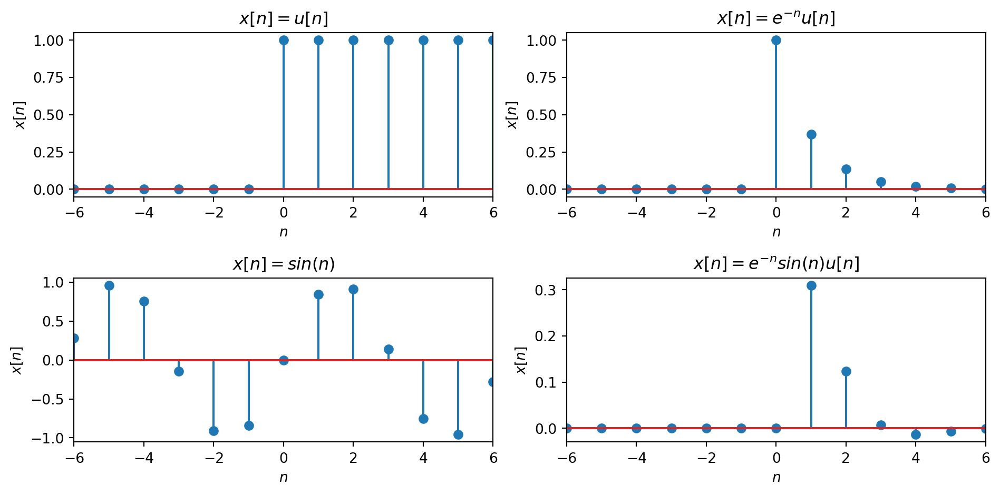

ECE 4624: Meeting 2
Continuous-Time (CT) and Discrete-Time (DT) Signals and Systems
2025-08-26
Today we define CT and DT Signals and how to characterize them. Then we review the basic notion of a system as a transformation between signals.
Readings:
Topics:
- Signals as Functions
- Primitive Models
- Impulse Function
- Step Function
- Complex Exponential
- Basic Signal Transformations
- Characterization of Signals
- Basic Systems
- Input Signals
- Output or Response Signals
- Impulse Response
- Step Response
- Complex Exponential Response
Signals as Functions
In order to reason about signals mathematically we need a representation or model. Signals are modeled as functions, mappings between sets \[ f: A \rightarrow B \] where \(A\) is a set called the domain and \(B\) is a set called the range.
The most basic classification of signals depends on the sets that makeup the domain and co-domain. We will be interested in two versions of the domain, the reals denoted \(\mathbb{R}\) and the integers denoted \(\mathbb{Z}\). We will be interested in two versions of the co-domain, the reals \(\mathbb{R}\) and the set of complex numbers \(\mathbb{C}\).
Analog Signals
If the function \(f: \mathbb{R} \rightarrow \mathbb{R}\), we call this an analog or real, continuous-time signal, e.g. a voltage at time \(t \in \mathbb{R}\), \(v(t)\). We will write these as \(x(t)\), \(y(t)\), etc. The units of \(t\) are seconds. Figure 1 shows some graphical representations, i.e. plots.
Real, Discrete-time Signal
If the function \(f: \mathbb{Z} \rightarrow \mathbb{R}\), we call this a real, discrete-time signal, e.g. the temperature every day at noon. We will write these as \(x[n]\), \(y[n]\), etc. Note \(n\) is dimensionless. Figure 2 shows some graphical representations.

Some other possibilities
- \(f: \mathbb{R} \rightarrow \mathbb{Z}\), discrete-valued, continuous-time signals
- \(f: \mathbb{Z} \rightarrow \mathbb{Z}\), discrete-valued, discrete-time signals
The co-domain can also be complex.
- \(f: \mathbb{R} \rightarrow \mathbb{C}\), complex-valued, continuous-time signals, e.g. \[ x(t) = e^{j\omega t} = \cos(\omega t) + j\sin(\omega t) \]
- \(f: \mathbb{Z} \rightarrow \mathbb{C}\), complex-valued, discrete-time signals, e.g. \[ x[n] = e^{j\omega n} = \cos(\omega n) + j\sin(\omega n) \]
Since the domains \(\mathbb{R}\) and \(\mathbb{Z}\) are usually interpreted as time, we call these time-domain signals. In the time-domain, when the co-domain is \(\mathbb{R}\) we call these real signals. All physical signals are real. However pairs of complex signals are important mathematical models in linear systems theory.
Digital Signals
We are ultimately interested in signals
\[ f: \mathbb{Z} \rightarrow \mathbb{Q} \]
where the range \(\mathbb{Q} \subset \mathbb{Z}^+\) is the set of unsigned \(N\)-bit values
\[ \sum\limits_{i = -A}^{B} b_i 2^{-i} \]
- \(b_i \in\{0,1\}\) it the ith bit
- \(b_{-A}\) is the most-signifigant bit (MSB)
- \(b_{B}\) is the least-signifigant bit (LSB)
- the location of the decimal point is implied
- signed values have various representations
However, these functions are hard to work with mathematically, so we generally work with DT signals and look at practical consequencces separately.
Primitive Models
We mathematically model signals by combining elementary/primitive functions, for example:
- polynomials: \(x(t) = t\), \(x(t) = t^2\), etc.
- transendental functions: \(x(t) = e^t\), \(x(t) = \sin(t)\), \(x(t) = \cos(t)\), etc.
- piecewise functions, e.g. \[ x(t) = \left\{ \begin{array}{cl} f_1(t) & t < 0\\ f_2(t) & t \geq 0\\ \end{array}\right. \]
Unit Step Function
To model turning signals on we often use a piecewise function, the unit-step
In continuous-time:
\[ u(t) = \left\{ \begin{array}{cl} 0 & t < 0\\ 1 & t \geq 0\\ \end{array}\right. \]
Note: some texts define the step function at \(t=0\) to be \(0\) or \(\frac{1}{2}\).
In discrete-time:
\[ u[n] = \left\{ \begin{array}{cl} 0 & n < 0\\ 1 & n \geq 0\\ \end{array}\right. \]
Note: there is no ambiguity about the value at \(n=0\).
Unit Impulse Function
An important signal in linear system theory is the impulse function:
It is easily defined in discrete-time:
\[ \delta[n] = \left\{ \begin{array}{cl} 0 & n \neq 0\\ 1 & n = 0\\ \end{array}\right. \]
However in continuous-time it is defined using generalized functions. Two definitions:
\[ \delta(t) = \lim_{\epsilon \rightarrow 0}\left\{ \begin{array}{ll} \frac{1}{2\epsilon} & |t| < \epsilon\\ 0 & \text{else} \end{array} \right. \]
\[ \delta(t) = \lim_{\epsilon \rightarrow 0} \frac{1}{\sqrt{2\pi}\epsilon} e^{-\frac{t^2}{2\epsilon^2}} \]
Note the area under each definition is always one.
CT Impulse Function cont.
In practice we can often use the following heuristic definition and some properties, without worrying about the distribution functions. \[ \delta(t) = \left\{ \begin{array}{ll} 0 & t \neq 0\\ \infty & t = 0 \end{array} \right. \]
- The area under the unit impulse is unity since by definition \[ \int\limits_{-\infty}^{\infty} \delta(t) \; dt = 1 \]
- Sampling property: \(x(t)\delta(t-t_0) = x(t_0)\delta(t-t_0)\)
- Sifting Property: \[ \int\limits_{a}^{b} x(t)\delta(t-t_0) \; dt = x(t_0) \] for any \(a < t_0 < b\).
Relationships between the unit step and impulse in CT
We previously defined the unit step function. The impulse can be defined in terms of the step: \[ \delta(t) = \frac{du}{dt} \] and vice-versa \[ u(t) = \int\limits_{-\infty}^{t} \delta(\tau) \; d\tau \] using the notion of distributions, e.g.
\[ u(t) = \int\limits_{-\infty}^{t} \delta(\tau) \; d\tau = \lim_{\epsilon \rightarrow 0} \int\limits_{-\infty}^{t} \frac{1}{\sqrt{2\pi}\epsilon} e^{-\frac{\tau^2}{2\epsilon^2}} \; d\tau = \lim_{\epsilon \rightarrow 0} \frac{1}{2}\left(1+\text{erf}\left( \frac{t}{\sqrt{2}\epsilon}\right)\right) \]
Variations on the step and impulse in CT
We can apply additional transformations to the impulse and step functions to get other useful signals, e.g.
- ramp \[ r(t) = \int\limits_{-\infty}^{t} u(\tau) \; d\tau = tu(t) \]
- causal pulse of width \(\epsilon\) \[ p(t) = u(t) - u(t-\epsilon) \]
- non-causal pulse of width \(2\epsilon\) \[ p(t) = u(t+\epsilon) - u(t-\epsilon) \]
Relationships between the unit step and impulse in DT
Some useful properties of the DT impulse function are:
Energy is 1: \(\sum\limits_{n=-\infty}^{\infty} \delta[n] = 1\)
Sampling: \(x[n]\delta[n-n_0] = x[n_0]\delta[n-n_0]\)
Sifting: \(\sum\limits_{n=-\infty}^{\infty} x[n]\delta[n-n_0] = x[n_0]\)
The impulse can be defined in terms of the step and vice-versa: \[\delta[n] = u[n] - u[n-1]\]
\[u[n] = \sum\limits_{m=-\infty}^{n} \delta[m]\] or
\[u[n] = \sum\limits_{k=0}^{\infty} \delta[n-k]\]
Complex Exponential in CT
One of the most important signals in systems theory is the complex exponential: \[ x(t) = C\, e^{a t} \] where the parameters \(C, a \in \mathbb{C}\) in general.
- When \(C\) and \(a\) are both real (\(\Im(C) = \Im(a) = 0\)), we have the familiar exponential.
Complex Exponential in CT cont.
To get the pure sinusoidal case, let \(C \in \mathbb{R}\) and \(a\) be purely imaginary: \(a = j\omega_0\): \[ x(t) = Ce^{j\omega_0 t} \] where \(\omega_0\) is the frequency (in radians/sec). This is called the complex sinusoid.
By Euler’s identity: \[ e^{j\omega_0 t} = \cos(\omega_0 t) + j\sin(\omega_0 t) \] and \[ \Re(x(t)) = \cos(\omega_0 t) = \frac{1}{2}\left( e^{j\omega_0 t} + e^{-j\omega_0 t} \right) \]
\[ \Im(x(t)) = \sin(\omega_0 t) = \frac{1}{2j}\left( e^{j\omega_0 t} - e^{-j\omega_0 t} \right) \] are both real sinusoids.
Complex Exponential in CT cont.
When the parameter \(C\) is complex we get a phase shift. Again let \(a = j\omega_0\). When \(C\) is complex we can write it as \(C = Ae^{j\phi}\) where \(A = |C|\) and \(\phi = \angle C\). Then
\[ x(t) = Ae^{j\phi} e^{j\omega_0 t} = Ae^{j(\omega_0 t+\phi)} \] and \[ \Re(x(t)) = A\cos(\omega_0 t+\phi) \]
\[ \Im(x(t)) = A\sin(\omega_0 t+\phi) \]
Since \(\sin\) is a special case of \(\cos\), i.e. \(\cos(\theta) = \sin(\theta + \frac{\pi}{2})\), the general real sinusoid is
\[ A\cos(\omega_0 t + \phi) \]
- \(A\) is called the amplitude
- \(\omega_0\) is again the frequency in radians/sec.
- \(\phi\) is called the phase shift and is related to a time shift \(T_s\) by \[ \phi = \omega_0T_s \]
Complex Exponential in DT
The DT Complex Exponential is defined in a similar fashion the the CT version, but with some important differences.
The general DT complex exponential is given by the expression:
\[x[n] = Ce^{\beta n}\]
where in general \(C \in \mathbb{C}\) and \(\beta \in \mathbb{C}\).
It is usually more convenient to write this as
\[x[n] = C \alpha^n\]
where \(\alpha = e^{j\theta}\) is a complex number \(\alpha = \cos(\theta) + j\sin(\theta)\).
Basic Transformations (focusing on DT)
We can also apply transformations to signals to increase their modeling flexibility.
magnitude scaling \[x_2[n] = a x_1[n]\] for \(a \in \mathbb{R}\).
time differences \[x_2[n] = x_1[n] - x_1[n-1]\]
running sums \[x_2[n] = \sum\limits_{m = -\infty}^{n} x_1[m]\]
sums \[y[n] = \sum\limits_{i} x_i[n]\]
Basic DT Transformations cont.
multiplication (modulation) \[y[n] = x_1[n] x_2[n]\]
time index shift \[x_2[n] = x_1[n+m]\]
if \(m < 0\) it is called a delay
if \(m > 0\) it is called an advance
time reversal \[x_2[n] = x_1[-n]\]
Basic DT Transformations cont.
decimation \[y[n] = x[m n]\] for \(m \in \mathbb{Z}^+\).
e.g. for \(m=2\) only keep every other sample
e.g. for \(m=3\) only keep every third sample
etc.
interpolation \[y[n] = \left\{ \begin{array}{cl} x\left[ \frac{n}{m}\right] & n = 0\; , \; \pm m, , \; \pm 2m \cdots\\ 0 & \mbox{else} \end{array}\right.\] When \(m = 2\) this inserts a zero sample between every sample of the signal.
Characterization of CT Signals
There are a few basic ways of characterizing signals.
A CT signal is causal if \(x(t) = 0\) \(\forall t < 0\).
A CT signal is anti-causal or acausal if \(x(t) = 0\) \(\forall t \geq 0\). A signal can be written as the sum of a causal and anti-causal signal.
A CT signal is periodic if \(x(t) = x(t + T)\) \(\forall t\) for a fixed parameter \(T \in \mathbb{R}\) called the . The simplest periodic signals are those based on the sinusoidal functions.
A CT signal is even if \(x(t) = x(-t)\) \(\forall t\).
A CT signal is odd if \(x(t) = -x(-t)\) \(\forall t\).
Any CT signal can be written in terms of an even and odd component \[ x(t) = x_e(t) + x_o(t) \] where \(x_e(t) = \frac{1}{2}\left\{x(t) + x(-t)\right\}\) and \(x_o(t) = \frac{1}{2}\left\{x(t) - x(-t)\right\}\).
Characterization of CT Signals cont.
- The energy of a CT signal \(x(t)\) is defined as a measure of the function \[ E_x = \lim_{T\rightarrow\infty} \int\limits_{-T}^T \lvert x(t) \rvert^2 dt \; . \]
- The power of a CT signal is the energy averaged over an interval as that interval tends to infinity. \[ P_x = \lim_{T\rightarrow\infty} \frac{1}{2T} \int_{-T}^T \lvert x(t)\rvert^2 dt \; . \]
Signals can be characterized based on their energy or power:
- Signals with finite, non-zero energy and zero power are called energy signals.
- Signals with finite, non-zero power (and by implication infinite energy) are called power signals.
Characterization of DT Signals
Similarly there are a few basic ways of characterizing DT signals.
A DT signal is causal if \(x[n] = 0\) \(\forall n < 0\).
A DT signal is anti-causal or acausal if \(x[n] = 0\) \(\forall n \geq 0\).
A DT signal can be written as the sum of a causal and anti-causal signal.
A DT signal is periodic if \(x[n] = x[n + N] \; \forall n\) for a fixed period \(N \in \mathbb{Z}\).
A DT signal is even if \(x[n] = x[-n] \; \forall n\).
A DT signal is odd if \(x[n] = -x[-n] \; \forall n\).
Any DT signal can be written in terms of an even and odd component \[x[n] = x_e[n] + x_o[n]\] where \(x_e[n] = \frac{1}{2}\left\{x[n] + x[-n]\right\}\) and \(x_o[n] = \frac{1}{2}\left\{x[n] - x[-n]\right\}\)
Characterization of DT Signals cont.
Analogous to CT signals, the energy of a DT signal is \[E_x = \lim_{N\rightarrow\infty} \sum\limits_{-N}^N \lvert x[n]\rvert^2 \; .\]
The power of a DT signal is the energy averaged over an interval as that interval tends to infinity.
\[P_x = \lim_{N\rightarrow\infty} \frac{1}{2N+1} \sum\limits_{-N}^N \lvert x[n]\rvert^2 \; .\]
DT Signals with finite, non-zero energy and zero power are called energy signals.
DT Signals with finite, non-zero power (and by implication infinite energy) are called power signals.
Systems
A system is an interconncted set of components or sub-systems. Mathematically a system is a transformation, \(T\), between one or more signals, a rule that maps functions to functions.
single input - single output (SISO) system.
SISO Block Diagram single input - multiple output (SIMO) system

SIMO Block Diagram general case, multiple input - multiple output (MIMO)

MIMO Block Diagram


We will focus on single input - single output systems.
Systems cont.
If both input and output are CT signals, it is a CT system.

Generic Block Diagram of CT System If both input and output are DT signals, it is a DT system.

Generic Block Diagram of a DT System If input and output are not both CT or DT signals, it is a hybrid CT-DT system.
Generic Block Diagram of a Hybrid DT/CT System 
Generic Block Diagram of a Hybrid CT/DT System


We will focus on Hybrid and DT systems.
System Input and Output
The input to a SISO system is a signal.
The output from a SISO system, or its response, is also a signal
There are three canonical responses considered:
- Impulse Response
- Step Response
- Complex Exponential or sinusoidal response
For LTI systems the last two can be derived from the first.
The impulse response for CT systems is denoted \(h(t)\).
Impulse Response of CT System The impulse response for DT systems is denoted \(h[n]\).
Impulse Response of DT System
CT system representations
We can mathematically represent, or model, systems multiple ways.
- purely mathematically - in time domain we generically use
- for CT systems: differential equations e.g. \[y^{\prime\prime} + ay^\prime + by = x\]
- for DT systems: difference equations e.g. \[y[n] = a y[n-1] + b y[n-2] + x[n]\]
- graphically, using a mixture of math and block diagrams
Mathematical models:
provide abstraction, removing (often) irrelevant detail.
can be more or less detailed, an internal v.s. external (block box) description
are not unique with respect to instantiation (implementation)
are limited to the regime they were designed for
System properties and classification
Choosing the right kind of system model is important. Here are some important properties that allow us to broadly classify systems.
- Memory
- Invertability
- Causality
- Stability
- Time-invariance
- Linearity
Our focus is on linear, time-invariant (LTI) systems. Such systems can be represented completely by:
- an LCCDE,
- an impulse response, or
- a transfer function.
When stable they can also be represented by thier frequency response.
Reminders and Next Actions
- Read PM 4.2
- Refer to as needed Chapters 14 and 16 of ECE 2714 Supplementary Notes
- Reminder: PS #1 is due Sept. 10